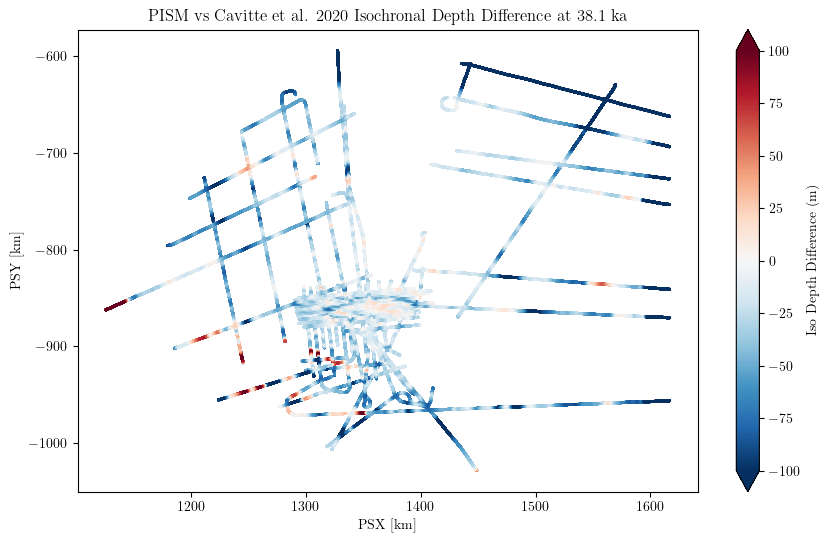
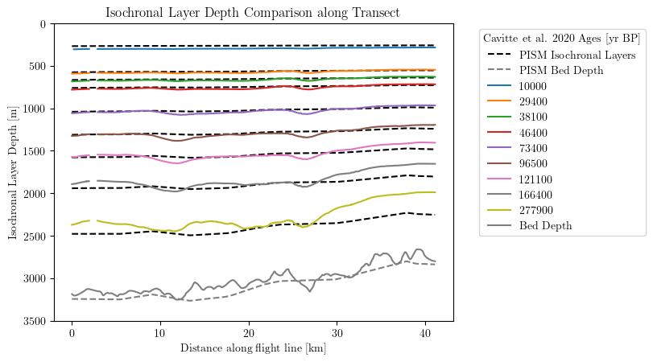

Model-Data Comparison with PISM#
Comparing PISM Ice Sheet Model Output with AntADatabase IRH Data
This notebook demonstrates how to compare Internal Reflecting Horizon (IRH) data from the AntADatabase with output from the Parallel Ice Sheet Model (PISM).
About PISM#
PISM (Parallel Ice Sheet Model) includes an englacial layer tracing scheme (Born and Robinson 2021) since version 2.1. This allows PISM to simulate the formation and evolution of isochrones within the ice sheet.
Purpose#
This notebook provides descriptive examples of how to:
Load and process PISM model output containing isochronal layers
Query and retrieve IRH data from AntADatabase
Interpolate model output onto observation locations
Compare model predictions with observed IRH data
Create visualization of model-data mismatches
Users can adapt these examples for their own diagnostic routines and model validation workflows.
Setup and Data#
PISM Output#
This example uses output from a regional PISM domain setup around Dome C, East Antarctica. The model was configured to trace layers matching the Cavitte et al. 2020 dataset.
Important Time Reference Note:
PISM time is in seconds since year 0
Dated IRHs are typically in years before 1950 (BP)
Careful conversion between these time systems is required for accurate comparison
Loading PISM Output#
PISM outputs the isochronal_layer_thickness variable, which needs to be converted to isochronal depth. We then select the layer of interest for comparison.
import xarray as xr
import numpy as np
# Load PISM output (replace with your actual file path)
pism_out = xr.open_dataset('/home/anthe/data/isochrones/pism_output_example/edc_pism_output.nc', engine='netcdf4', decode_times=False).squeeze()
# Convert isochronal layer thickness to depth
# Note: We reverse the deposition_time dimension twice to get the cumulative sum correct
pism_out['isochronal_layer_depth'] = (
pism_out.isochronal_layer_thickness
.isel(deposition_time=slice(None, None, -1)) # Reverse deposition_time
.cumsum(dim='deposition_time')
.isel(deposition_time=slice(None, None, -1)) # Reverse back
)
# Define the age of interest (note: may differ from Cavitte et al. 2020 due to different ice core age scales)
age = 38000 # years BP
age_offset = -1950 # Account for difference between model time and IRH age scale
age_seconds = -(age + age_offset) * 3600 * 24 * 365 # Convert to seconds since year 0
# Extract the specific layer
pism_layer = pism_out.isochronal_layer_depth.sel(deposition_time=age_seconds).values.flatten()
# Create coordinate grid for interpolation
X_pism, Y_pism = np.meshgrid(pism_out.x, pism_out.y)
pism_points = np.column_stack((X_pism.flatten(), Y_pism.flatten()))
2D Comparison: Spatial Mismatch#
Query AntADatabase#
Retrieve IRH data from AntADatabase for comparison with the PISM output:
from anta_database import Database
# Initialize database (replace with your actual database path)
db = Database('/home/anthe/data/isochrones/AntADatabase/', include_BEDMAP=True)
# Filter out unwanted flight lines
db.filter_out(flight_id=['%RAID%', '2H%', '2V%', 'HR%', 'BH%', 'H4%'])
# Query specific dataset and age
query = db.query(dataset='Cavitte_2020', age='38100') # Compare with 38.1 ka layer
# Get list of files matching the query
irh_files = db.get_files()
Interpolate PISM onto IRH Locations#
We need to interpolate the PISM isochronal layer depth onto the IRH flight line coordinates to compute the difference. Below are two approaches: using xarray (convenient) and h5py (faster for large datasets).
Method 1: Using xarray#
xarray provides a convenient interface for working with the data:
from scipy.interpolate import griddata
import pandas as pd
# Initialize lists to store results
all_psx = []
all_psy = []
all_depth_diff = []
# Process each IRH file
for f in irh_files:
irh = xr.open_dataset(f)
for age in query['age']:
irh_layer = irh.IRH_DEPTH.sel(IRH_AGE=int(age))
fl_line_xy = np.column_stack((irh.PSX, irh.PSY))
pism_depth_interp = griddata(pism_points, pism_layer, fl_line_xy, method='linear')
depth_diff = pism_depth_interp - irh_layer
all_psx.extend(irh.PSX.values)
all_psy.extend(irh.PSY.values)
all_depth_diff.extend(depth_diff)
Method 2: Using h5py (Recommended for Performance)#
h5py provides more efficient data reading, which is better for processing many files:
import h5py
# Initialize lists to store results
all_psx = []
all_psy = []
all_depth_diff = []
# Process each IRH file
for f in irh_files:
with h5py.File(f, 'r') as irh:
irh_values = irh['IRH_AGE'][:]
for age in query['age']:
irh_index = np.where(irh_values == int(age))[0]
irh_index = irh_index[0]
irh_layer = irh['IRH_DEPTH'][:, irh_index]
fl_line_xy = np.column_stack((irh['PSX'][:], irh['PSY'][:]))
pism_depth_interp = griddata(pism_points, pism_layer, fl_line_xy, method='linear')
depth_diff = pism_depth_interp - irh_layer
all_psx.extend(irh['PSX'][:])
all_psy.extend(irh['PSY'][:])
all_depth_diff.extend(depth_diff)
Visualize 2D Mismatch#
Create a scatter plot showing the spatial distribution of depth differences between PISM and observed IRH data:
import matplotlib.pyplot as plt
# Create DataFrame from collected data
df = pd.DataFrame({
'PSX': all_psx,
'PSY': all_psy,
'Depth_diff': all_depth_diff
})
# Create the plot
plt.figure(figsize=(10, 6))
sc = plt.scatter(
df['PSX']/1000, # Convert to km
df['PSY']/1000,
c=df['Depth_diff'],
cmap='RdBu_r', # Red for PISM deeper, Blue for PISM shallower
s=1,
vmin=-100,
vmax=100
)
plt.colorbar(sc, label='Iso Depth Difference (m)', extend='both')
plt.title('PISM vs Cavitte et al. 2020 Isochronal Depth Difference at 38.1 ka')
plt.xlabel('PSX [km]')
plt.ylabel('PSY [km]')
plt.show()

1D Comparison: Transect Analysis#
For more detailed analysis, we can compare PISM and IRH data along specific transects. This is particularly useful for identifying systematic biases or local mismatches.
Select a Transect#
First, select a specific flight line for detailed comparison:
# Query a specific flight line
db.query(dataset='Cavitte_2020', flight_id='DC_LDC_DIVIDE')
# Get the file for this flight line
f = db.get_files()[0]
irh = xr.open_dataset(f)
Select Layers for Comparison#
Choose which isochronal layers to compare. Note that the ages in PISM output may differ slightly from the original dataset due to different ice core chronologies.
# Define ages for both datasets
cavitte_ages = [10000, 29400, 38100, 46400, 73400, 96500, 121100, 166400, 277900]
pism_ages = [10000, 29300, 38000, 46600, 73100, 97400, 122800, 165200, 278000] # PISM ages differ slightly
# Extract IRH layers from the dataset
irh_layers = irh.sel(IRH_AGE=cavitte_ages)
fl_line_xy = np.column_stack((irh.PSX, irh.PSY))
Interpolate PISM Layers onto Transect#
Interpolate each PISM isochronal layer onto the flight line coordinates:
# Interpolate and plot each PISM layer
for age in pism_ages:
age_seconds = -(age + age_offset) * (3600 * 24 * 365)
pism_layer = pism_out.isochronal_layer_depth.sel(deposition_time=age_seconds).values.flatten()
pism_depth_interp = griddata(pism_points, pism_layer, fl_line_xy, method='linear')
plt.plot(irh.Distance/1000, pism_depth_interp, linestyle='--', color='k')
# Add a dummy line for the legend
plt.plot(0, 0, color='black', linestyle='--', label='PISM Isochronal Layers')
# Interpolate PISM bed depth
pism_bed_depth_interp = griddata(pism_points, pism_out.thk.values.flatten(), fl_line_xy, method='linear')
plt.plot(irh.Distance/1000, pism_bed_depth_interp, color='gray', linestyle='--', label='PISM Bed Depth')
# Plot IRH layers from the dataset
plt.plot(irh.Distance/1000, irh_layers.IRH_DEPTH, label=irh_layers.IRH_AGE.values)
plt.plot(irh.Distance/1000, irh_layers.ICE_THK, color='gray', label='Bed Depth')
# Format the plot
plt.ylim(3500, 0) # Depth increases downward
plt.xlabel('Distance along flight line [km]')
plt.ylabel('Isochronal Layer Depth [m]')
plt.title('Isochronal Layer Depth Comparison along Transect')
plt.legend(title='Cavitte et al. 2020 Ages [yr BP]', bbox_to_anchor=(1.05, 1), loc='upper left')
plt.show()

Interpreting Results#
2D Mismatch Plot#
The 2D spatial mismatch plot shows:
Red points: PISM predicts deeper isochrones than observed
Blue points: PISM predicts shallower isochrones than observed
White points: Good agreement between model and observations
This helps identify spatial patterns in model bias or areas where the model may need improvement.
1D Transect Plot#
The 1D transect comparison shows:
Solid lines: Observed IRH depths from Cavitte et al. 2020
Dashed lines: PISM-predicted isochronal layer depths
Gray lines: Bed depth (both observed and modeled)
Differences in layer depths can indicate:
Issues with model physics (e.g., ice flow, accumulation rates)
Problems with layer tracing in the model
Differences in age scales or dating methods
Local ice sheet conditions not captured by the model
Time Conversion Considerations#
Important Notes on Age Scales#
When comparing model output with observed IRH data, pay special attention to time references:
PISM Time:
Uses seconds since year 0
Positive values for future, negative for past
IRH Ages:
Typically in years before present (BP)
Often referenced to 1950 (so 38,100 years BP = 36,150 years BCE)
Conversion:
The example uses:
age_seconds = -(age + age_offset) * 3600 * 24 * 365age_offset = -1950accounts for the 1950 reference dateAlways verify the time reference used in your specific dataset
Performance Considerations#
Method Comparison#
Method |
Pros |
Cons |
Best For |
|---|---|---|---|
xarray |
Easy to use, good for exploration |
Slower for many files |
Single files, small datasets |
h5py |
Faster, more efficient |
More verbose code |
Large datasets, production workflows |
Optimization Tips#
For large comparisons: Use h5py method and process files in batches
For spatial interpolation: Consider using KDTree for faster nearest-neighbor lookups
For memory efficiency: Use generators or process one file at a time
For parallel processing: The interpolation step can be easily parallelized
Adapting to Your Workflow#
Customizing for Your Model#
To adapt this example to your own model output:
Update file paths: Change the PISM output file path to your model output
Adjust time conversion: Modify the age_offset and time conversion based on your model’s time reference
Select different layers: Choose the isochronal layers that match your validation data
Modify visualization: Adjust plot parameters (vmin, vmax, colormap) for your specific comparison
Integrating with Diagnostic Tools#
You can integrate these comparison methods into larger diagnostic frameworks:
Automated validation: Run comparisons for multiple layers and regions
Statistical analysis: Calculate RMSE, bias, and other metrics across the ice sheet
Time series analysis: Compare how mismatches evolve over time
Sensitivity studies: Test how model parameters affect IRH predictions
Additional Resources#
Conclusion#
This notebook has demonstrated how to compare PISM model output with IRH data from AntADatabase. The examples provided are intentionally descriptive rather than highly optimized, allowing you to understand the workflow and adapt it to your specific needs.
Key Takeaways:#
Time conversion is critical: Always verify time references between model and observations
Multiple comparison methods: 2D spatial and 1D transect analyses provide complementary insights
Performance matters: Choose the right method (xarray vs h5py) based on your dataset size
Visualization is powerful: Well-designed plots can reveal systematic model biases
Next Steps:#
Adapt the code for your specific model and dataset
Integrate into your validation workflow
Explore different regions and age layers
Consider automated comparison across multiple datasets